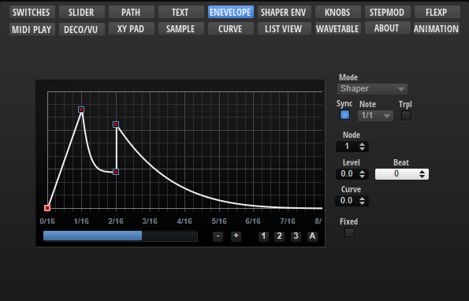
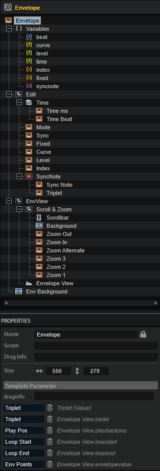

/ HALion Developer Resource / HALion Macro Page / Templates /
Envelope
On this page:

Description
The Envelope template allows you to edit HALion's multi-stage envelopes. The template contains controls for scrolling and zooming the envelope and for setting the envelope mode or the values of the selected node, for example. The controls must be part of the template and they must use the UI variables as defined in the template to connect with the Envelope View Control.
❕ The Envelope View Control cannot be created manually in the GUI Tree. Please load the template from the Basic Controls library to use it. You can adapt the look and feel of the template to the requirements of your macro page with the Properties and Colors as described below. If certain controls are not required or wanted, they can be removed.
To explore the functionality and connections:
- Load the Init Basic Controls.vstpreset from the Basic Controls library.
- Open the Macro Page Designer, go to the GUI Tree and navigate to "Pages > Envelope Page".
- Select "Envelope" and click Edit Element
 to examine the template.
to examine the template.
Template Properties
| Poperty | Description |
|---|---|
| Name | The name of the element. This name will be displayed in the GUI Tree. |
| Position/Size | Position X, Position Y, Width, Height: Position and size of the element in pixels. Position X/Y defines the position of the upper left corner. |
| Attach | Defines how an element behaves when its parent element is resized. You can set the following parameters:
|
| Tooltip | Text that appears as a tooltip when the mouse hovers over the element. |
| Template | Determines the template to be referenced. |
Template Parameters
| Parameter | Description |
|---|---|
| Triplet | Connect this to the Triplet parameter of the envelope. |
| Mode | Connect this to the Mode parameter of the envelope. |
| Play Pos | Connect this to the PlaybackPos parameter of the envelope. |
| Loop Start | Connect this to the LoopStart parameter of the envelope. |
| Loop End | Connect this to the LoopEnd parameter of the envelope. |
| Env Points | Connect this to the Envelope Points parameter of the envelope. |
| Sync | Connect this to the Sync parameter of the envelope. |
| Sustain | Connect this to the SustainIndex parameter of the envelope. |
Components inside the Template

UI Variables
These variables are needed to allow the communication between the Envelope View and other controls in the template.
| Variable | Description | Type | Range |
|---|---|---|---|
| beat | Time in beats. | rational | n.a. |
| curve | Curvature of the selected node segment. | float | -10 - 10 |
| level | Level of the selected node. | float | 0 - 100 |
| time | Time of the selected note. | float | 0 - 30000 |
| index | Index of the selected node. | integer | 0 - 128 |
| fixed | Fixed mode of the envelope. | integer | 0, 1 |
| syncnote | Specifies the note grid. | stringlist | 1/1, 1/2, 1/4, 1/8, 1/16, 1/32, 1/64, 1/128, 1/256 |
Controls and Subtemplates
| Item | Description |
|---|---|
| Edit | This Group contains controls that allow you to draw shapes, adjust the selected node and further options of the envelope.
|
| EnvView | This Group contains a group with controls for scrolling and zooming the envelope and the Envelope View.
|
| Env Background | The background bitmap for the envelope. |
Envelope View Control
Properties
In addition to standard properties like size, position, etc., the Envelope View provides further properties and colors to customize its appearance and behavior.
| Poperty | Description |
|---|---|
| Name | The name of the element. This name will be displayed in the GUI Tree. |
| Position/Size | Position X, Position Y, Width, Height: Position and size of the element in pixels. Position X/Y defines the position of the upper left corner. |
| Attach | Defines how an element behaves when its parent element is resized. You can set the following parameters:
|
| Tooltip | Text that appears as a tooltip when the mouse hovers over the element. |
| Style |
|
| Env Value | Exported as Env Points. See Template Parameters above. |
| Mode | Exported as Mode See Template Parameters above. |
| Sync | Exported as Sync See Template Parameters above. |
| Triplet | Exported as Triplet See Template Parameters above. |
| SyncNote | Connected to the corresponding control template by the UI variable @syncnote. |
| Fixed | Connected to the corresponding control template by the UI variable @fixed. |
| Tool | Not used in this template. See Envelope Shaper template for details of this property. |
| ShapeSave | Not used in this template. See Envelope Shaper template for details of this property. |
| ShapeSelect | Not used in this template. See Envelope Shaper template for details of this property. |
| Shape | Not used in this template. See Envelope Shaper template for details of this property. |
| Index | Connected to the corresponding control template by the UI variable @index. |
| Level | Connected to the corresponding control template by the UI variable @level. |
| Time | Connected to the corresponding control template by the UI variable @time. |
| Beat | Connected to the corresponding control template by the UI variable @beat. |
| Curve | Connected to the corresponding control template by the UI variable @curve. |
| Loop Start | Exported as Loop Start. See Template Parameters above. |
| Loop End | Exported as Loop End. See Template Parameters above. |
| Sustain | Exported as Sustain. See Template Parameters above. |
| Play Pos | Exported as Play Pos. See Template Parameters above. |
| Min X | Defines the minimum value of the horizontal zoom. |
| Max X | Defines the maximum value of the horizontal zoom. |
| Min Y | Defines the minimum value of the vertical zoom. |
| Max Y | Defines the maximum value of the vertical zoom. |
Colors
❕ Some colors are available only if the corresponding Style options are enabled.
| Poperty | Description |
|---|---|
| Line | Line color between the nodes. |
| Fill | Fill color of the nodes. |
| FillSelected | Fill color of the selected nodes. |
| FrameFocus | Frame color of the focussed node. |
| Frame | Frame color of the nodes. |
| Hover | Hover frame color of the nodes. |
| Sustain | Color of the Sustain node and line. |
| Synced | Dot color of nodes that are aligned to the sync grid. |
| Crosshair | Node edit crosshair color. |
| Play Pos | Color of the playback position indicator. |
| Border | Overall border color. |
| Grid V | Vertical grid color. |
| Grid V2 | Vertical fine grid color. |
| Grid V3 | Vertical fine grid color. |
| Grid H | Horizontal grid color. |
| Grid H2 | Horizontal fine grid color. |
| Font | Timeline font color. |
| Selector | Selection area fill color. |
| SelFrame | Selection area frame color. |
| Zoom | Zoom area fill color. |
| ZoomFrame | Zoom area frame color. |
| Loop | Loop area fill color. |
| LoopFrame | Loop area frame color. |